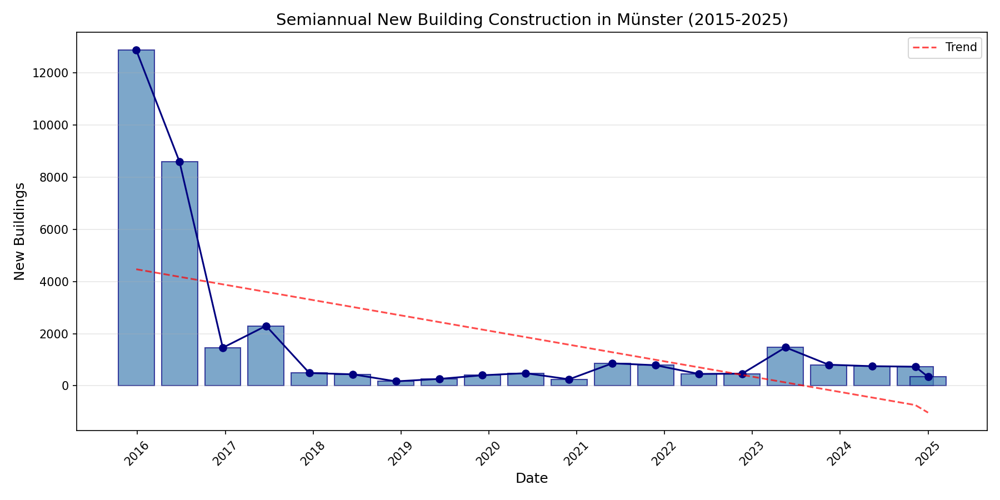
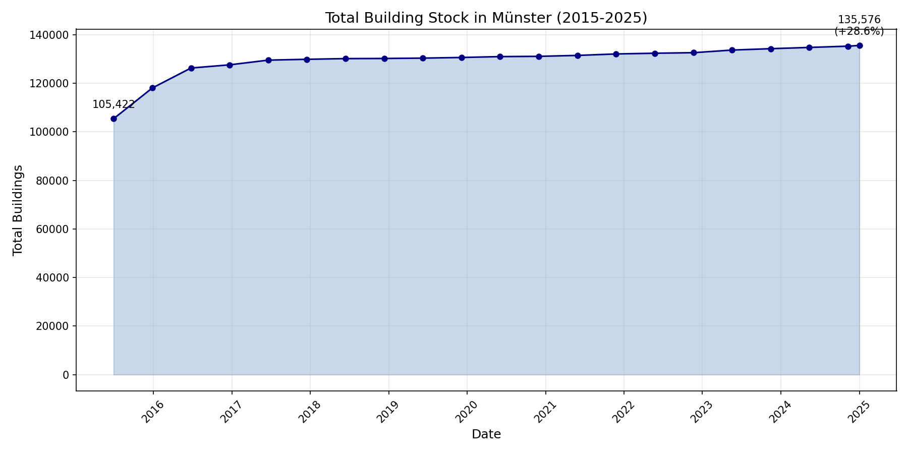
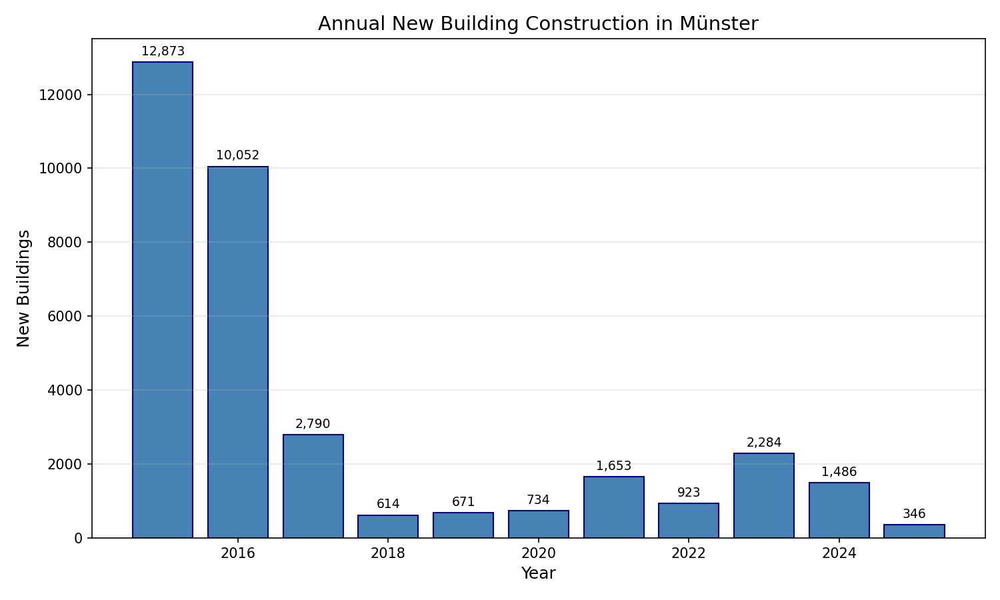
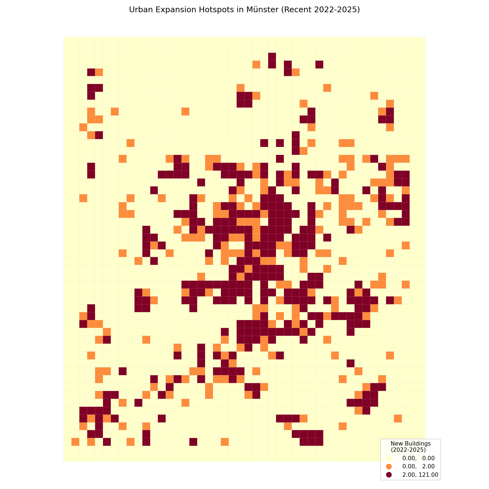

Time series and trend analysis of urban expansion in Münster
This chart shows the number of new buildings detected in each semiannual period. The initial high values (2015-2016) reflect both actual construction and improved OSM mapping coverage. Recent years show stable growth of approximately 600-1,500 buildings per period.

Figure 1: Semiannual new building counts (2015-2025)
The cumulative growth curve demonstrates the steady expansion of Münster's building stock over the decade. The steeper slope in early years flattens to a more consistent rate after 2017, indicating stabilization of both mapping activity and construction rates.

Figure 2: Cumulative new buildings over time
Annual aggregation provides a clearer view of year-over-year trends, smoothing out seasonal variations. The chart shows consistent annual additions ranging from ~2,000-4,000 buildings in recent years.

Figure 3: Annual new building totals by year
The hotspot map reveals where new construction is concentrated. Warmer colors indicate higher densities of new buildings. The southern and southeastern suburbs show particularly high development activity.

Figure 4: Spatial distribution of new buildings (500m grid)